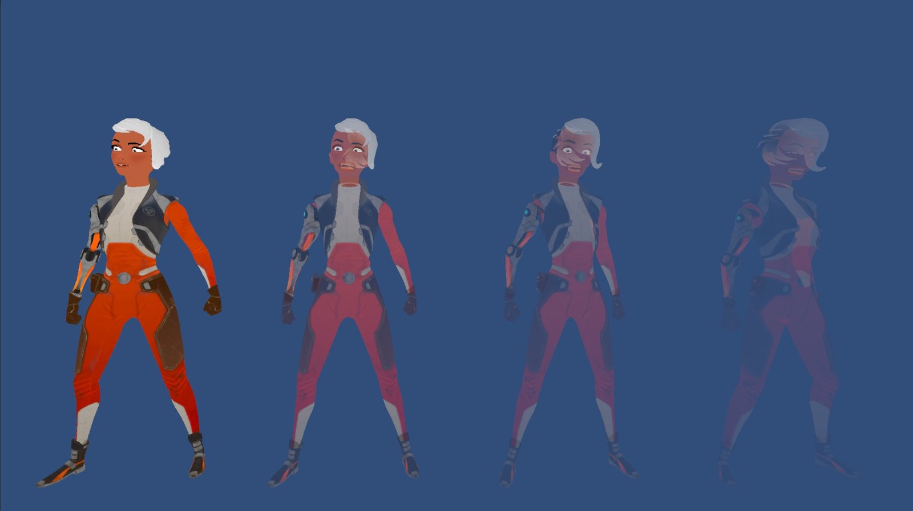
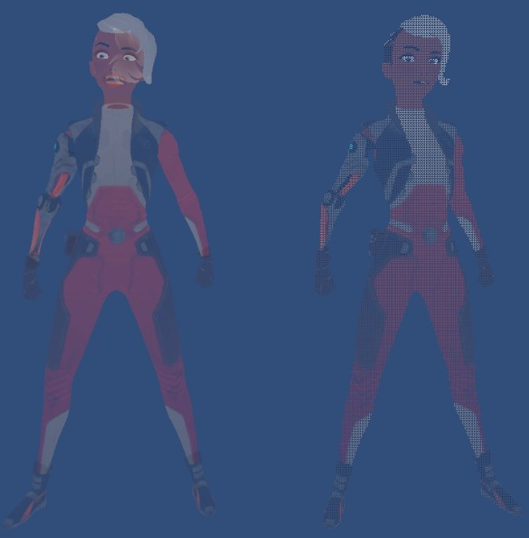
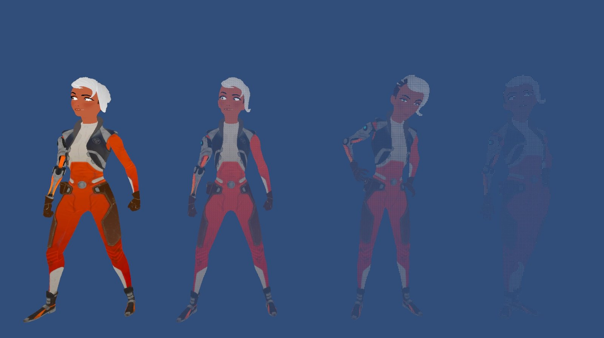

Stipple Transparency 是一種基於螢幕空間的物件渲染方式，透過轉換螢幕空間位置至像素位置計算出閥值，剔除不必要的像素。
隨著物件透明度的上升，逐漸地增加剃除像素的數量。
剔除過程
Unity 中預設的透明物件渲染方式是基於 Alpha Blending，由文章 Unity Game View Overdraw – 在遊戲視窗上顯示 Overdraw 可得知，當 Render Queue 為 Transparency 時由於物件採取由後到前的方式繪製，所以會有 Overdraw 的情況發生。
且當複數個物件重疊時，會出現本該是一體的物件出現渲染排序的問題，導致透明渲染呈現詭異的結果。

預設透明漸變過程Stipple Transparency 渲染方式則是基於 Alpha Testing，能夠避免 Overdraw、改善渲染排序、提高物件整體性。
1. 計算螢幕空間位置
o.vertex = UnityObjectToClipPos(v.vertex);
o.screenPos = ComputeScreenPos(o.vertex);2. 定義閥值矩陣
const float4x4 thresholdMatrix =
{
1, 9, 3, 11,
13, 5, 15, 7,
4, 12, 2, 10,
16, 8, 14, 6
};3. 計算對應像素位置
float2 pixelPos = i.screenPos.xy / i.screenPos.w * _ScreenParams.xy;4. 取得對應閥值
float threshold = thresholdMatrix[pixelPos.x % 4][pixelPos.y % 4] / 17;5. 剔除像素
clip(_Alpha - threshold);
預設透明 vs Stipple Transparency
Stipple Transparency 漸變過程Coding Adventure: Game Idea Generator
Unity Stipple Transparency Shader
Screen-Door Transparency